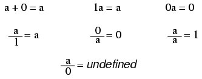
Note: while division by zero is popularly thought to be equal to infinity, this is not technically true. In some practical applications it may be helpful to think the result of such a fraction approaching positive infinity as a positive denominator approaches zero (imagine calculating current I=E/R in a circuit with resistance approaching zero -- current would approach infinity), but the actual fraction of anything divided by zero is undefined in the scope of either real or complex numbers.
In addition and multiplication, terms may be arbitrarily associated with each other through the use of parentheses:
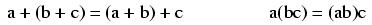
In addition and multiplication, terms may be arbitrarily interchanged, or commutated:
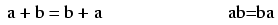
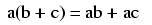
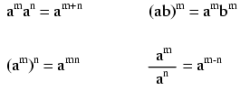
When people talk of a "square root," they're referring to a radical with a root of 2. This is mathematically equivalent to a number raised to the power of 1/2. This equivalence is useful to know when using a calculator to determine a strange root. Suppose for example you needed to find the fourth root of a number, but your calculator lacks a "4th root" button or function. If it has a yx function (which any scientific calculator should have), you can find the fourth root by raising that number to the 1/4 power, or x0.25.
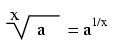
It is important to remember that when solving for an even root (square root, fourth root, etc.) of any number, there are two valid answers. For example, most people know that the square root of nine is three, but negative three is also a valid answer, since (-3)2 = 9 just as 32 = 9.
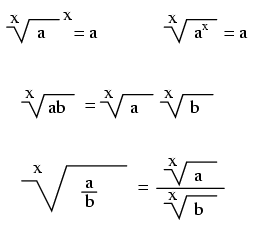
Euler's constant is an important value for exponential functions, especially scientific applications involving decay (such as the decay of a radioactive substance). It is especially important in calculus due to its uniquely self-similar properties of integration and differentiation.
e approximately equals: 2.71828 18284 59045 23536 02874 71352 66249 77572 47093 69996
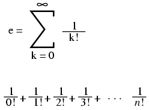
Pi (π) is defined as the ratio of a circle's circumference to its diameter.
Pi approximately equals: 3.14159 26535 89793 23846 26433 83279 50288 41971 69399 37511
Note: For both Euler's constant (e) and pi (π), the spaces shown between each set of five digits have no mathematical significance. They are placed there just to make it easier for your eyes to "piece" the number into five-digit groups when manually copying.
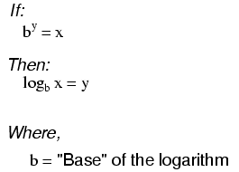
"log" denotes a common logarithm (base = 10), while "ln" denotes a natural logarithm (base = e).
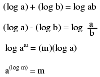
These properties of logarithms come in handy for performing complex multiplication and division operations. They are an example of something called a transform function, whereby one type of mathematical operation is transformed into another type of mathematical operation that is simpler to solve. Using a table of logarithm figures, one can multiply or divide numbers by adding or subtracting their logarithms, respectively. then looking up that logarithm figure in the table and seeing what the final product or quotient is.
Slide rules work on this principle of logarithms by performing multiplication and division through addition and subtraction of distances on the slide.
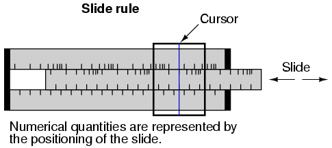
Marks on a slide rule's scales are spaced in a logarithmic fashion, so that a linear positioning of the scale or cursor results in a nonlinear indication as read on the scale(s). Adding or subtracting lengths on these logarithmic scales results in an indication equivalent to the product or quotient, respectively, of those lengths.
Most slide rules were also equipped with special scales for trigonometric functions, powers, roots, and other useful arithmetic functions.
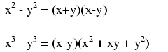
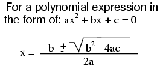
An arithmetic sequence is a series of numbers obtained by adding (or subtracting) the same value with each step. A child's counting sequence (1, 2, 3, 4, . . .) is a simple arithmetic sequence, where the common difference is 1: that is, each adjacent number in the sequence differs by a value of one. An arithmetic sequence counting only even numbers (2, 4, 6, 8, . . .) or only odd numbers (1, 3, 5, 7, 9, . . .) would have a common difference of 2.
In the standard notation of sequences, a lower-case letter "a" represents an element (a single number) in the sequence. The term "an" refers to the element at the nth step in the sequence. For example, "a3" in an even-counting (common difference = 2) arithmetic sequence starting at 2 would be the number 6, "a" representing 4 and "a1" representing the starting point of the sequence (given in this example as 2).
A capital letter "A" represents the sum of an arithmetic sequence. For instance, in the same even-counting sequence starting at 2, A4 is equal to the sum of all elements from a1 through a4, which of course would be 2 + 4 + 6 + 8, or 20.
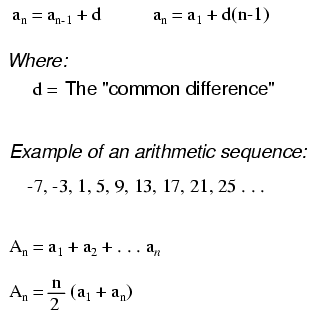
A geometric sequence, on the other hand, is a series of numbers obtained by multiplying (or dividing) by the same value with each step. A binary place-weight sequence (1, 2, 4, 8, 16, 32, 64, . . .) is a simple geometric sequence, where the common ratio is 2: that is, each adjacent number in the sequence differs by a factor of two.

Denoted by the symbol "!" after an integer; the product of that integer and all integers in descent to 1.
Example of a factorial:
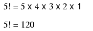
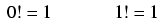
The terms simultaneous equations and systems of equations refer to conditions where two or more unknown variables are related to each other through an equal number of equations. Consider the following example:
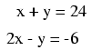
For this set of equations, there is but a single combination of values for x and y that will satisfy both. Either equation, considered separately, has an infinitude of valid (x,y) solutions, but together there is only one. Plotted on a graph, this condition becomes obvious:
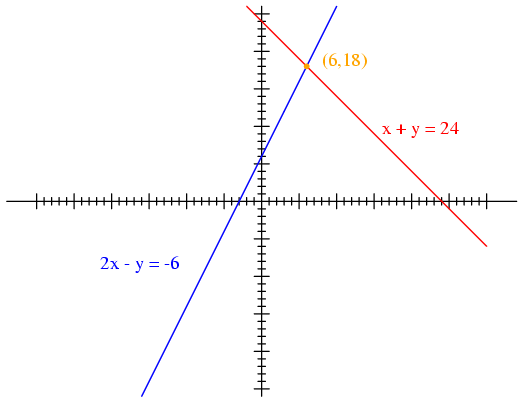
Each line is actually a continuum of points representing possible x and y solution pairs for each equation. Each equation, separately, has an infinite number of ordered pair (x,y) solutions. There is only one point where the two linear functions x + y = 24 and 2x - y = -6 intersect (where one of their many independent solutions happen to work for both equations), and that is where x is equal to a value of 6 and y is equal to a value of 18.
Usually, though, graphing is not a very efficient way to determine the simultaneous solution set for two or more equations. It is especially impractical for systems of three or more variables. In a three-variable system, for example, the solution would be found by the point intersection of three planes in a three-dimensional coordinate space -- not an easy scenario to visualize.
Several algebraic techniques exist to solve simultaneous equations. Perhaps the easiest to comprehend is the substitution method. Take, for instance, our two-variable example problem:
In the substitution method, we manipulate one of the equations such that one variable is defined in terms of the other:
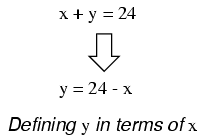
Then, we take this new definition of one variable and substitute it for the same variable in the other equation. In this case, we take the definition of y, which is 24 - x and substitute this for the y term found in the other equation:
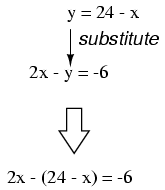
Now that we have an equation with just a single variable (x), we can solve it using "normal" algebraic techniques:
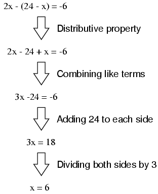
Now that x is known, we can plug this value into any of the original equations and obtain a value for y. Or, to save us some work, we can plug this value (6) into the equation we just generated to define y in terms of x, being that it is already in a form to solve for y:
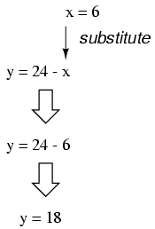
Applying the substitution method to systems of three or more variables involves a similar pattern, only with more work involved. This is generally true for any method of solution: the number of steps required for obtaining solutions increases rapidly with each additional variable in the system.
To solve for three unknown variables, we need at least three equations. Consider this example:

Being that the first equation has the simplest coefficients (1, -1, and 1, for x, y, and z, respectively), it seems logical to use it to develop a definition of one variable in terms of the other two. In this example, I'll solve for x in terms of y and z:
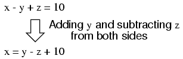
Now, we can substitute this definition of x where x appears in the other two equations:
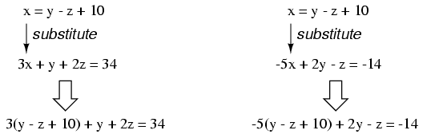
Reducing these two equations to their simplest forms:
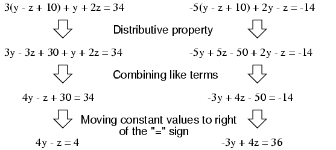
So far, our efforts have reduced the system from three variables in three equations to two variables in two equations. Now, we can apply the substitution technique again to the two equations 4y - z = 4 and -3y + 4z = 36 to solve for either y or z. First, I'll manipulate the first equation to define z in terms of y:
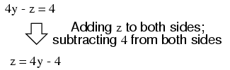
Next, we'll substitute this definition of z in terms of y where we see z in the other equation:
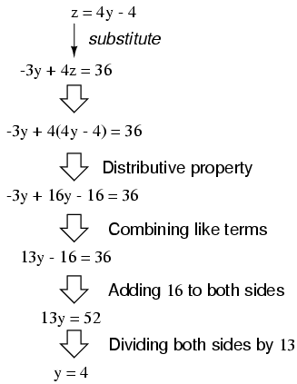
Now that y is a known value, we can plug it into the equation defining z in terms of y and obtain a figure for z:
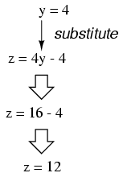
Now, with values for y and z known, we can plug these into the equation where we defined x in terms of y and z, to obtain a value for x:
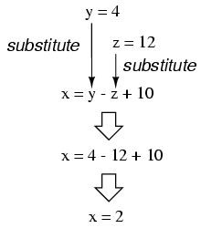
In closing, we've found values for x, y, and z of 2, 4, and 12, respectively, that satisfy all three equations.
While the substitution method may be the easiest to grasp on a conceptual level, there are other methods of solution available to us. One such method is the so-called addition method, whereby equations are added to one another for the purpose of canceling variable terms.
Let's take our two-variable system used to demonstrate the substitution method:
One of the most-used rules of algebra is that you may perform any arithmetic operation you wish to an equation so long as you do it equally to both sides. With reference to addition, this means we may add any quantity we wish to both sides of an equation -- so long as its the same quantity -- without altering the truth of the equation.
An option we have, then, is to add the corresponding sides of the equations together to form a new equation. Since each equation is an expression of equality (the same quantity on either side of the = sign), adding the left-hand side of one equation to the left-hand side of the other equation is valid so long as we add the two equations' right-hand sides together as well. In our example equation set, for instance, we may add x + y to 2x - y, and add 24 and -6 together as well to form a new equation. What benefit does this hold for us? Examine what happens when we do this to our example equation set:
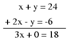
Because the top equation happened to contain a positive y term while the bottom equation happened to contain a negative y term, these two terms canceled each other in the process of addition, leaving no y term in the sum. What we have left is a new equation, but one with only a single unknown variable, x! This allows us to easily solve for the value of x:
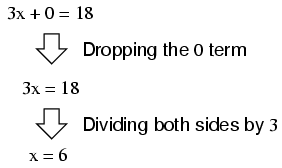
Once we have a known value for x, of course, determining y's value is a simply matter of substitution (replacing x with the number 6) into one of the original equations. In this example, the technique of adding the equations together worked well to produce an equation with a single unknown variable. What about an example where things aren't so simple? Consider the following equation set:
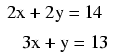
We could add these two equations together -- this being a completely valid algebraic operation -- but it would not profit us in the goal of obtaining values for x and y:
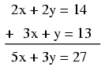
The resulting equation still contains two unknown variables, just like the original equations do, and so we're no further along in obtaining a solution. However, what if we could manipulate one of the equations so as to have a negative term that would cancel the respective term in the other equation when added? Then, the system would reduce to a single equation with a single unknown variable just as with the last (fortuitous) example.
If we could only turn the y term in the lower equation into a - 2y term, so that when the two equations were added together, both y terms in the equations would cancel, leaving us with only an x term, this would bring us closer to a solution. Fortunately, this is not difficult to do. If we multiply each and every term of the lower equation by a -2, it will produce the result we seek:
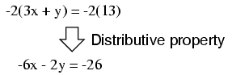
Now, we may add this new equation to the original, upper equation:
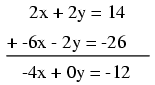
Solving for x, we obtain a value of 3:
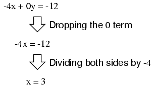
Substituting this new-found value for x into one of the original equations, the value of y is easily determined:
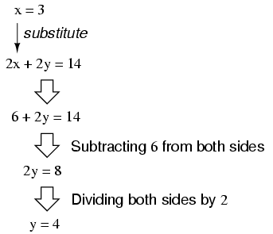
Using this solution technique on a three-variable system is a bit more complex. As with substitution, you must use this technique to reduce the three-equation system of three variables down to two equations with two variables, then apply it again to obtain a single equation with one unknown variable. To demonstrate, I'll use the three-variable equation system from the substitution section:
Being that the top equation has coefficient values of 1 for each variable, it will be an easy equation to manipulate and use as a cancellation tool. For instance, if we wish to cancel the 3x term from the middle equation, all we need to do is take the top equation, multiply each of its terms by -3, then add it to the middle equation like this:
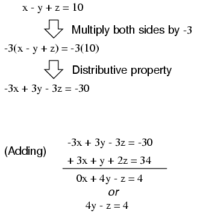
We can rid the bottom equation of its -5x term in the same manner: take the original top equation, multiply each of its terms by 5, then add that modified equation to the bottom equation, leaving a new equation with only y and z terms:
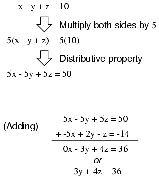
At this point, we have two equations with the same two unknown variables, y and z:
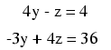
By inspection, it should be evident that the -z term of the upper equation could be leveraged to cancel the 4z term in the lower equation if only we multiply each term of the upper equation by 4 and add the two equations together:
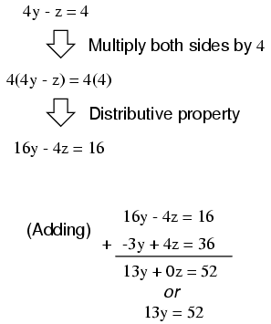
Taking the new equation 13y = 52 and solving for y (by dividing both sides by 13), we get a value of 4 for y. Substituting this value of 4 for y in either of the two-variable equations allows us to solve for z. Substituting both values of y and z into any one of the original, three-variable equations allows us to solve for x. The final result (I'll spare you the algebraic steps, since you should be familiar with them by now!) is that x = 2, y = 4, and z = 12.
Contributors to this chapter are listed in chronological order of their contributions, from most recent to first. See Appendix 2 (Contributor List) for dates and contact information.
Chirvasuta Constantin (April 2, 2003): Pointed out error in quadratic equation formula.
Lessons In Electric Circuits copyright (C) 2000-2023 Tony R. Kuphaldt, under the terms and conditions of the CC BY License.